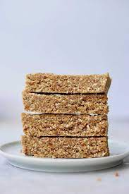

Oat and Date Bars

Description
Cooking couldn’t get easier than this no-bake oat and date bar recipe from Colorful Canary. With its only two ingredients being oats and dates, this recipe provides a tasty, nutritious and high-fiber snack option.
Ingredients
Steps
- Pulsate water and dates in a food processor until a thick, smooth paste forms. It should be the consistency of a thick jam.
- Add the oats; pulsate until blended.
- Press into the bottom of a glass pan to about 1/2″ thickness and chill.
- Once chilled and firm, cut and serve.